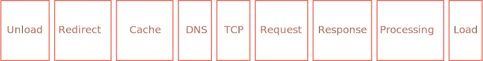
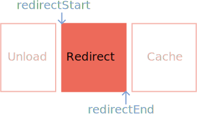

In regards to
measuring perf
Synthetic testing
(or lab data)

Lighthouse
The case for:
- It's easy to do.
- Great for spot checking performance in dev environments. (With network throttling, of course.)
- Easy to measure the effect of code changes on performance due to consistent baselines.
The case against:
It doesn't necessarily reflect what real users are experiencing.
Enter RUM

(No, not this.)
Real User Metrics
(or field data)
The case for:
You're gathering metrics from real users who are using your site/app.
The case against:
It's not as convenient.
performance.getEntriesByType("navigation").forEach((navigation)=>{
console.dir(navigation);
});Navigation
and
Resource Timing
Processing Model
w3.org/TR/navigation-timing-2/#processing-model
Unload
When the document unloads. Triggered any time a navigation (successfully) kicks off.
Unload

Regarding
unload metrics
startTimeis always0.unloadEventStartis not always0.unloadEventStartandunloadEventEndcan overlap with other events (e.g., connect, redirect).
Redirect
When a navigation encounters one (or more) 3xx level status codes, causing redirection.
You should care
about redirects
Redirect*
*Resource timing API processing model begins here.
Regarding
Redirect metrics
redirectStartandredirectEndwill be0if no redirects occur.- Redirects from and to other origins can still come up as
0if theTiming-Allow-Originheader isn't set.
App Cache
A phase where the browser may fetch items from a cache (including HTTP cache).
App Cache

Regarding
App Cache metrics
- Regardless of caching,
fetchStartbegins about the same time (varying baselines notwithstanding). - If an item is cached, metrics that come after
fetchStart(e.g.,connectStart, et cetera) will occur very nearly after.
Cached vs. uncached

DNS
When DNS lookups occur.
DNS

Regarding
DNS metrics
- DNS lookups happen once per origin per session.
- DNS lookups can be cached at multiple levels.
Connection
When connections are established.
Connection

Regarding
Connection metrics
- Connection setup happens once per origin per session.
secureConnectionStartonly happens on HTTPS.
Request/Response
When requests are made, and when responses begin and end.
Request/Response